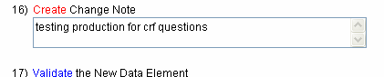

Search for Case Report Form Questions (Compliance Review Tool Integration):
The CDE Curation Tool allows users to retrieve Draft New Questions from a Case Report Form (CRF) currently under review.

FIGURE 1
Select CRF Questions
- Select CRF Questions from the "Search For" drop down list.
- Click the Start Search button to retrieve all the CRF Questions that are associated to the user name shown near the top of the screen.
Select CRF Questions from the 'Search For' drop down list then click the Start Search Button at the bottom of the search screen. This will display a list of all the Questions marked as Draft New from a Case Report Form currently checked out by your user name. This allows you to complete Draft New questions during the CRF review process in the CDE Compliance Review Tool.

FIGURE 2
Search for CRF Question
- Select the CRF Question you are interested in completing.
A list of the CRF Questions will appear in the Search Results portion
of the screen, if the username has completed the review of a Case Report
Form with questions marked as Draft New.
Select the desired CRF
Question by selecting the checkbox next to it. Once you have selected a
CRF Question, you may create/complete a Data Element that will be
associated with that CRF Question by clicking on the 'Complete Selected
DE' button at the top of the screen.

FIGURE 3
Create Data Element for the CRF Question
i Work through creation of a Data Element in the same manner you would create a new Data Element.
i The submitted question's text automatically populates the Preferred Question Text field.
Clicking the Complete Selected DE Button opens a Create New Data Element screen. Complete the Data Element attributes just as you would when Creating/Editing a Data Element.

FIGURE 4
CRF Questions Updated
i When a Draft New Data Element is completed, the DE Public ID will be displayed.
i After the new Data Element has been created, the list of Case Report Form Questions will return, with the Curation Status updated to "Attributes Completed" and the new Data Element name appearing by the question.
i A success message will appear confirming that the new Data Element has been created.
After you have finished creating/selecting attributes for the New Data
Element, Validated, and Submitted it to the caDSR, the CDE Curation Tool
will return you to the list of CRF Questions. You may then select the next
CRF Question for which you want to create/complete a Data
Element.